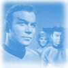
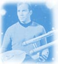
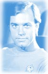
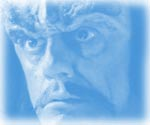
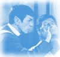
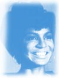
"Nesta galáxia, existe a probabilidade matemática de três milhões de planetas como a Terra. E em todo o universo, três milhões de milhões de galáxias como esta. E em tudo isto, e talvez mais, somente um de cada um de nós."
"Nós somos parecidos, eu e você. Sob outras circunstâncias eu poderia tê-lo chamado de amigo."
"Em algum dia, muito breve, a humanidade será capaz de controlar incríveis energias, mesmo o próprio átomo. Conhecimentos que nos levarão a outros mundos em algum tipo de nave espacial. Estes viajantes serão capazes de encontrar os meios para erradicar a fome e curar todas as doenças... e estes, senhoras e senhores, serão os tempos que valerão a pena serem vividos."
"Você está ao lado dele, onde sempre esteve e onde sempre estará."
"Deixe-me ajudar."
"Ele sabe, doutor... ele sabe."
"Em meio a toda revolução, existe sempre um homem de visão."
"Você não tem medo da morte, você tem medo da vida."
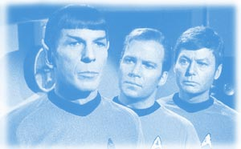
"Ele apenas sabe que deseja algo, mas, como muitos de nós, não sabe o quê."
"E foi o melhor dos tempos e foi o pior dos tempos"
"Eles reagirão
como todas as coisas vivas, dentro de suas possibilidades."
"Está partindo
de uma falsa premissa. Não tenho ego a ser ferido."
"A necessidade de
muitos sobrepõe-se a necessidade de poucos ... ou de um só."
"Eu sempre
fui e sempre serei ... seu amigo."
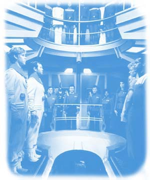
"Meu
filho! Minha vida como poderia ter sido... e não foi. Como me sinto? Velho. Acabado."
"Deixe-me mostrar algo que o fará se sentir jovem como quando o mundo era
novo."
"Não havia feito o teste do Kobayashi Maru... até agora.
O que achou da minha solução?"
"... de todas as almas que encontrei em
minhas viagens, a dele, foi a mais ... humana. "
"Enfrentar a morte é
no mínimo tão importante quanto enfrentar a vida."
"Ele não está realmente
morto enquanto nos lembrarmos dele."
"Agora
eu faço uma coisa melhor do que jamais fiz e vou para um descanso melhor do que
todos aqueles que jamais conheci."
"Jovem. Eu me sinto jovem."
"Existem sempre possibilidades"
" Sua perda é como uma ferida aberta. É como se eu tivesse deixado a minha parte
mais nobre para trás."
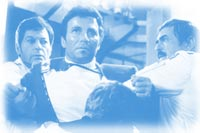
"Klingon
bastardo, matou meu filho."
"Meu Deus, Magro... o que foi que eu
fiz? O que você tinha que fazer, o que você sempre faz: transformar a morte em
uma real chance de vida."
"Como dizem na Terra, c'est la vie."
"Jim. Seu nome... é Jim."
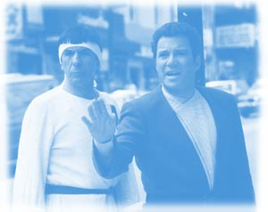
"E
tudo que eu peço é uma grande nave e uma estrela para me guiar."
"Eles
estão morrendo. Deixe-os morrer."
"Eu nunca confiei nos Klingons e nunca
confiarei. Nunca poderei perdoá-los pela morte do meu filho."
"Como pode
a história se esquecer de alguém como eu?"
"A expulsão do Paraíso...
um lembrete de que tudo acaba."
"Lógica é apenas o início do entendimento...
não o fim."
"A natureza odeia o vazio."
"Nao deixe terminar
aqui."
"Gorkon teve que morrer para que eu entendesse o meu preconceito."
"...quer saber de uma coisa? Todo mundo é humano."
"Eu acho
esta afirmação... um insulto."
"Seu pai chamava o futuro de 'a terra
desconhecida'. Existem muitos que temem tais mudanças. Você restaurou a crença
de meu pai. E você a de meu filho. "
"Se eu fosse humano, eu acredito
que a minha resposta seria: vão para o inferno! Se eu fosse humano, é claro."
"Segunda estrela a direita, e direto até o amanhecer."
"Esta é a
última viagem desta tripulação da nave estelar Enterprise. Esta nave e a sua história
logo serão cuidadas por uma nova tripulação. E a eles e a
sua posteridade confiamos o nosso futuro. Eles prosseguirão com as jornadas que
iniciamos e visitarão todas as terras desconhecidas, audaciosamente indo onde
nenhum homem, onde ninguém, jamais esteve. "
Jornada
nas Estrelas
Desde 1966
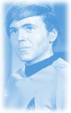
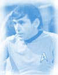